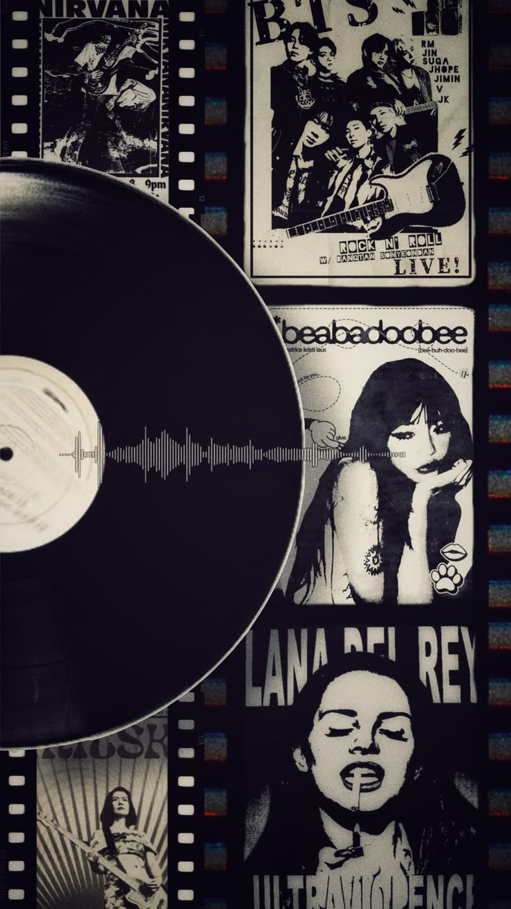
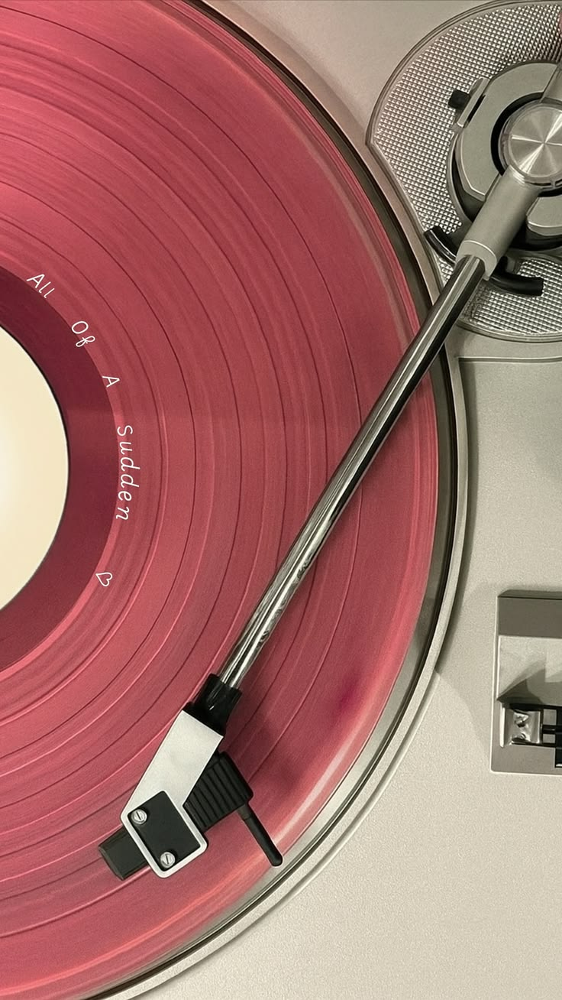

Music is one of my favorite hobbies because it helps me relax, focus, and feel inspired. I enjoy listening to different genres depending on my mood, whether it’s calming music during work or energetic songs when I want to feel motivated.
Why I Love Music
- It helps me reduce stress and unwind.
- Music boosts my creativity and concentration.
- It makes everyday tasks more enjoyable.
My Music Moments


